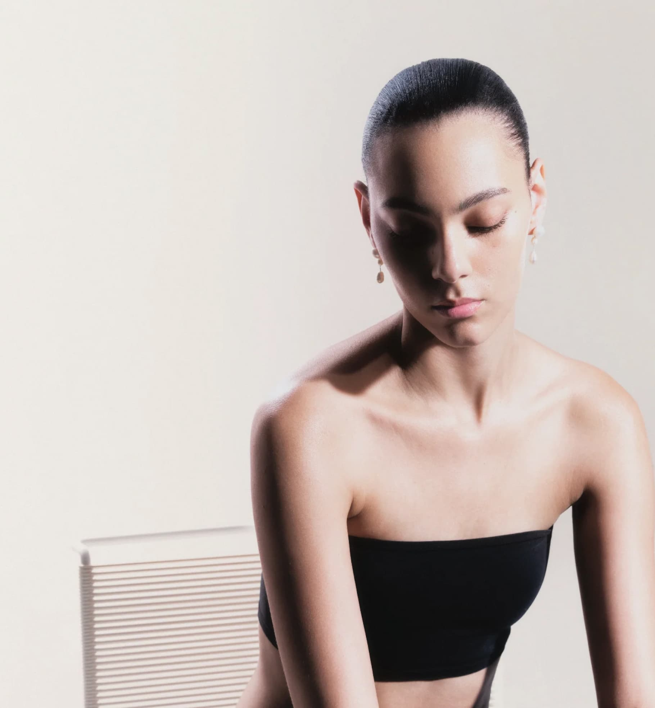
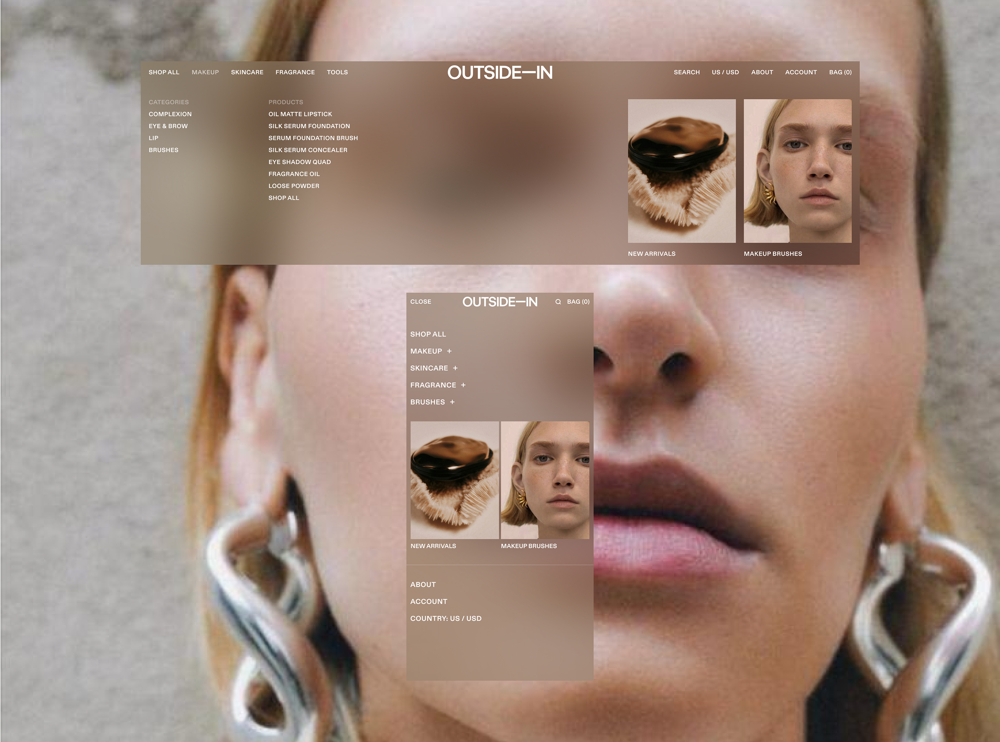
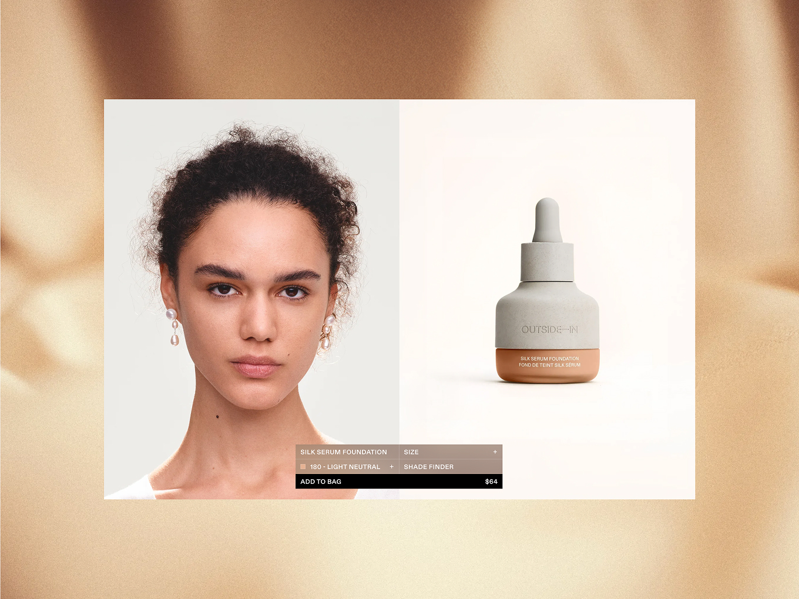
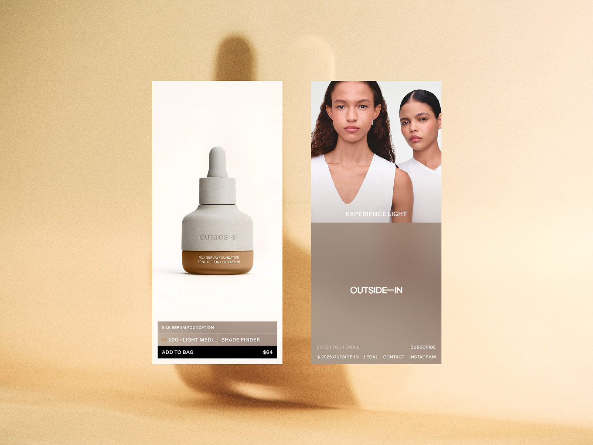
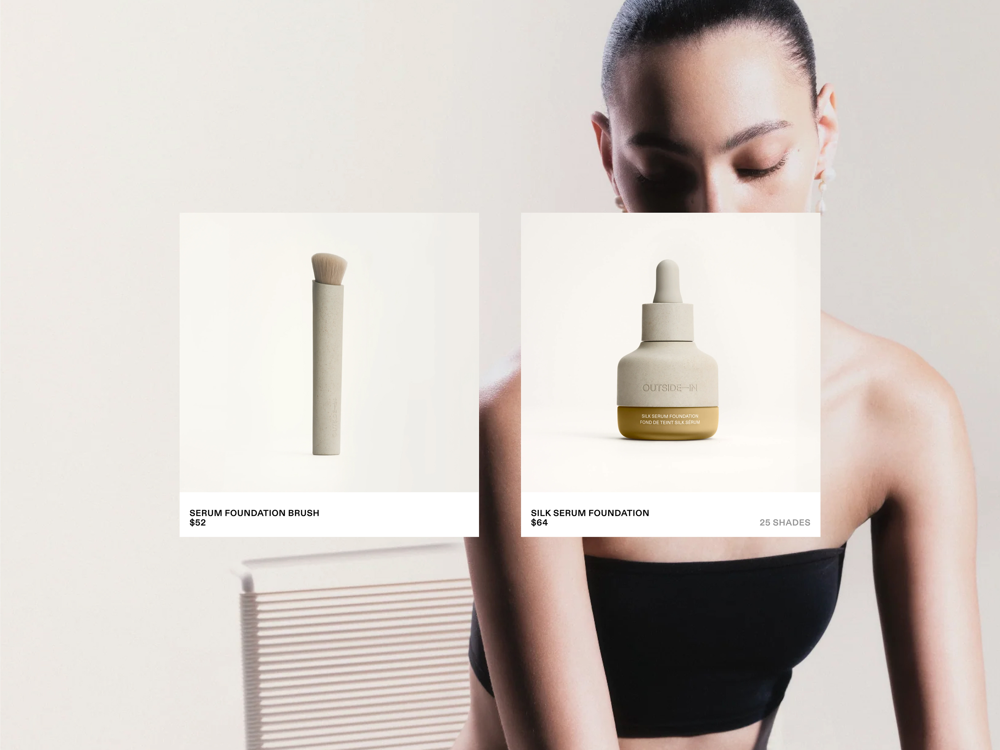
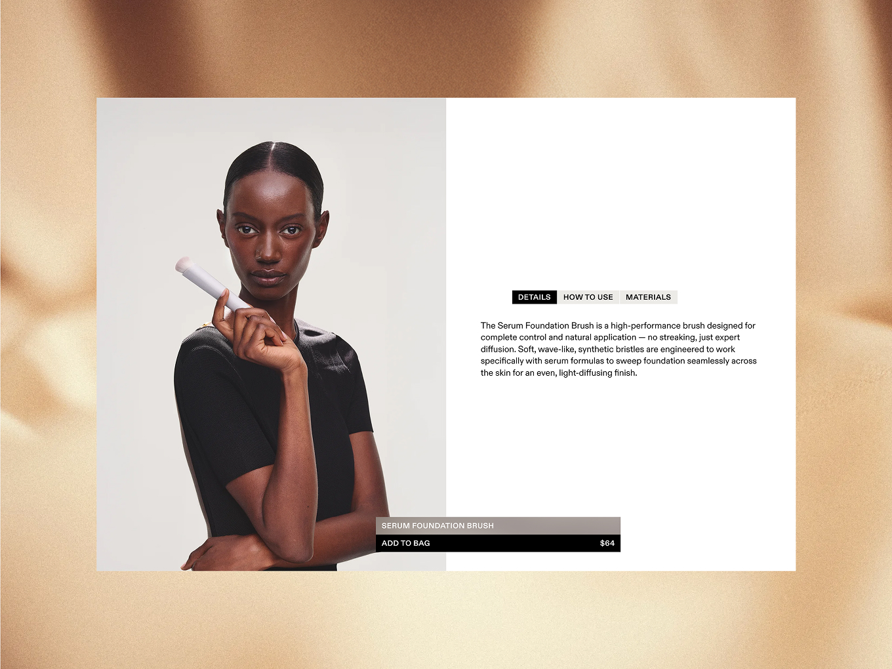
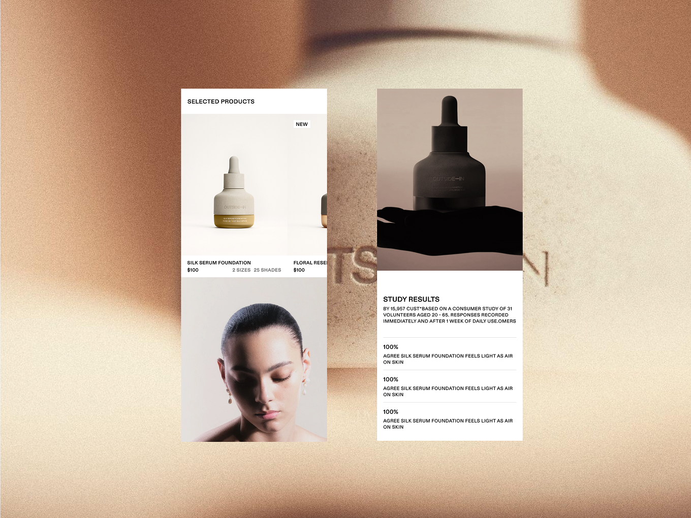
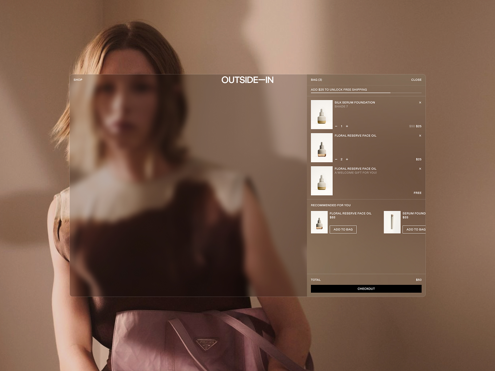
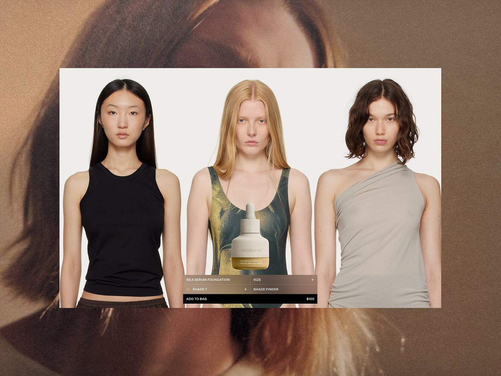

Outside-In
A Shade Finder That Shaped Everything
Outside In is a premium beauty brand launching into a crowded D2C market. The site made $60k in revenue in its first 7 days. I led design end to end, from discovery through to launch, working alongside one supporting designer, with development, PM, copywriting and marketing collaborating through delivery. The brand's core problem wasn't traffic, it was confidence. Customers didn't trust they'd picked the right foundation shade without seeing it in person, and that uncertainty was sending people in-store instead of online.
Results
- $60k revenue in first 7 days
- 441% growth in gross sales post-launch ($432K)
- 60% increase in returning customers
- 98.5% of testers felt more confident choosing a shade

The Challenge
Launching a premium beauty brand into a saturated market is hard enough. Outside In's specific problem was shade selection. Marketing was driving a highly engaged social audience to the site, but customers weren't confident enough in choosing the right foundation shade to commit to a purchase. Small swatch elements weren't giving people enough to go on, so a meaningful chunk of demand was leaking to physical retail instead.


The Approach
I started with a visual audit against the brand's new positioning, “Experience Light”, testing accessibility and contrast early to define the colour and type direction. A competitor and aspirational-brand review surfaced a clear gap: everyone was relying on small, low-context swatches to sell a highly personal decision.
To validate that, I spoke to 30+ existing customers about what stopped them buying online. The answer was consistent: shade confidence. That finding reshaped the project. Shade selection stopped being a UI detail and became the site's central feature.
Information Architecture stayed deliberately lean, a visually-led homepage, focused collection pages, and a brand story page, since marketing was handled entirely off-platform and the site's only job was converting that traffic. I made the call to skip wireframes and go straight into UI exploration, a decision that worked because the scope was narrow enough to validate against the real experience rather than a low-fidelity one, and it kept the project moving against a hard deadline.
I led creative direction across four visual routes, then built a fully documented atomic design system in Figma, working sprint by sprint so design and system stayed in step. The centrepiece was the shade finder: individual model shots for every shade, built into an interactive slider with development. It tested well, 98.5% of over 30 testers said it made them feel more confident choosing a shade than on any other site they'd used.

The Outcome
Post-launch performance held up well beyond the initial spike. Gross sales grew 441% ($432K), orders were up 498% (4,363), and sessions grew 503% (149K) against the prior period. Revenue and traffic scaled almost in lockstep, so growth wasn't just riding a paid or PR bump.
The number I'd point to first is returning customers, up 60% and now 10.2% of the base. That's the shade finder doing its job beyond the initial purchase, giving people enough confidence to come back. Product pages alone pulled 95K+ sessions as the top acquisition entry point.


Reflection
This project is a good example of research directly reshaping scope. The shade finder wasn't in the original brief, it came out of listening to customers and being willing to make it the centre of the site rather than a nice-to-have feature.

